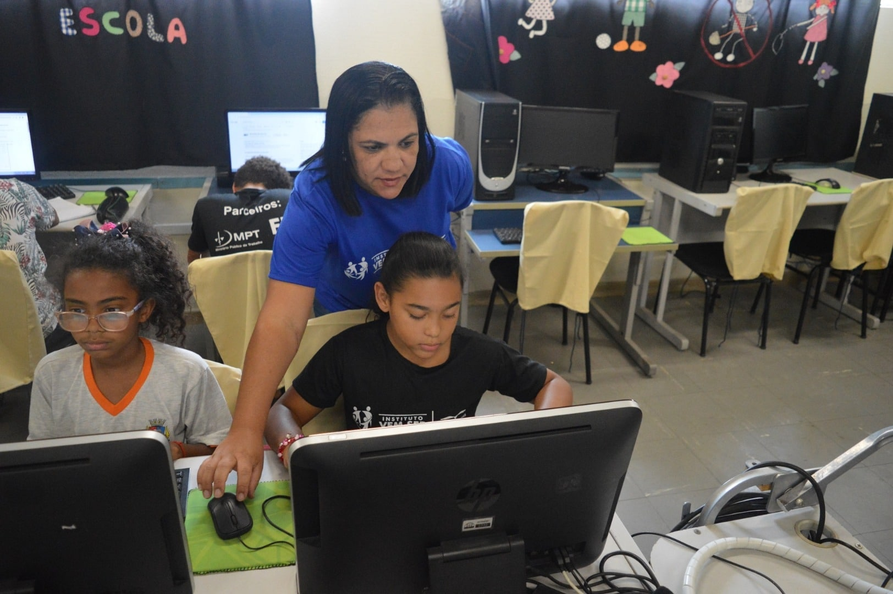

Projeto Educação Digital
Levamos inclusão digital para comunidades carentes, ensinando programação e informática básica.
Levamos inclusão digital para comunidades carentes, ensinando programação e informática básica.
Distribuímos refeições para pessoas em situação de vulnerabilidade social todas as noites.
Você pode fazer a diferença! Precisamos de voluntários para todas as nossas frentes de atuação.
Para participar, clique aqui e faça seu cadastro.
Sua doação nos ajuda a manter nossos projetos ativos. Você pode contribuir de diversas formas: